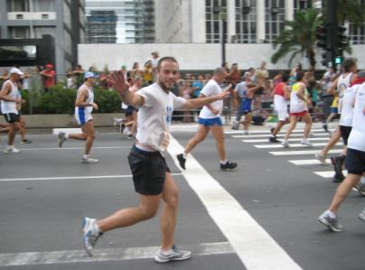

vamo, vamo, vamo…
Posts tagged Testemunhos Thiago
São Silvestre – Final
58 years
Fala pessoal, dia 31/12 foi um dia muito especial pra mim como todos já sabem foi o dia de correr a São Silvestre, acordei agitado e ansioso para o grande dia, meu joelho que gosta de brincar comigo começou a querer doer pensei que era psicológico porque dor no dia da corrida não seria justo ainda mais sem forçar nos treinos da ultima semana.
Cheguei à Avenida Paulista cedo eram umas 14:45h e já tinha muita movimentação, consegui um cantinho e me arrumei coloquei meu numero de peito, chip no pé e fui passear um pouco ver o povo fantasiado e a alegria de todos, aos poucos a avenida foi ficando tomada pelos corredores e eu me posicionei bem no meio, tinha uns 10.000 na minha frente e mais uns 10.000 pra trás, a Paula começou a sumir na multidão mas sempre tentando me acompanhar para registrar esse momento.
Deu a largada, minha vontade era de fazer em 01:15h mas era impossível, consegui impor meu ritmo de corrida depois do km6 muita gente na minha frente bem devagar, para não empurrar ninguém e sim fazer festa resolvi segurar e pensei a hora que der eu corro e no elevado foi que consegui impor meu ritmo mesmo assim tinha hora que tinha que diminuir, durante o percurso as pessoas vão gritando e aplaudindo sempre incentivando, as senhoras e crianças estendem os braços para bater em nossas mãos, é bom ir perto da calçada por isso vou comprimento e eles gritam “Feliz Ano Novo” depois dessa farra chega a brigadeiro, como não consegui impor um ritmo bom no começo sobrava um pouco mais de energia, me concentrei e fui subindo passando muita gente que já caminhava ou corria com muito esforço, quando olhei pra trás vi que um corredor me seguia vindo no meu ritmo depois de um tempo ele ficou para trás, uma pena estava sendo um grande incentivo, logo chegou a curva da brigadeiro o pessoal gritando muito e dando os parabéns, entro na paulista levanto a cabeça e abro a passada, comecei a procurar a Paula que bravamente me esperava no meio da galera para tirar uma foto, depois de posar pra foto em quanto corria dei mais um pique e cheguei com 01h 25min , a sensação é fantástica muita emoção, valeu muito a pena ano que vem estarei lá.
Gostaria de agradecer a todos que estiveram comigo e torceram para que desse tudo certo Paula, Claudio e Alex um grande abraço a todos.
Resultado:


Ansiedade toma conta
18 years
Estou muito ansioso pra São Silvestre, sempre que corro um prova importante isso acontece e como essa é umas das mais importantes por ser a maior competição da America do Sul e tantos atletas importantes que já passou por lá e que sou fã como Emil Zátopek, Paul Tergat e outros, já até sonhei com a competição, mas estou me segurando hoje depois do trabalho vou dar uma corridinha bem leve pra dar uma acalmada nos ânimos e dia 31/12 tirar esse nó da garganta que aparece principalmente quando estou para cruzar a linha de chegada.

Preparativos para São Silvestre
38 years
Salve galera estou em contagem regressiva para a São Silvestre, nesse feriado e final de semana consegui treinar um pouco, na quarta-feira treinei quando cheguei do trabalho 9km e na quinta-feira véspera de natal treinei cedinho, neste dia iria correr somente 6km mas no meio do treino começou a me acompanhar um outro corredor e fomos conversando ao estilo Dean Karnazes, trocando experiências de corrida, o cara vai fazer a São Silvestre em 50min, corre bem o cara então imaginem como foi meu treino, foi um total de 9km em um ritmo muito bom, no natal não corri, fui treinar somente no domingo e apenas 6km e depois do almoço fui retirar meu kit pra competição o que fez aumentar minha ansiedade mas agora o jeito é esperar, é isso ai um bom natal a todos e depois da São Silvestre volto aqui pra propor um desafio, grande abraço.

Feliz Natal – correndo
28 years
by Alecão
in Ex-sedentário
 Sábado passado eu, Claudio, Thiago e Paula, encaramos a prova de natal da Corpore. Foram 6 km que eu encarei correndo o tempo todo (ou quase).
Sábado passado eu, Claudio, Thiago e Paula, encaramos a prova de natal da Corpore. Foram 6 km que eu encarei correndo o tempo todo (ou quase).
Foi um desafio e tanto, pois não tive uma semana legal, encarando alguns medos interiores, mas a corrida veio e revitalizou meus pensamentos. E que venha os desafios!
Desta vez a minha fam√≠lia estava lá. Minha mulher torcendo por mim e meus filhos vendo o papai correr. Coitados, foram na esperan√ßa de ver o “Show da Turma da M√¥nica” e apenas viram a M√¥nica mandando beijinhos e distribuindo alguns abra√ßos. Posso dizer que isso faz a total diferen√ßa. Motiva saber que eles estarão na linha de chegada esperando a gente.
Largamos, eu, Claudio, Thiago e Paula. No primeiro quil√¥metro eu acompanhei quanto pode, tanto que fizemos em pouco mais de 7 minutos. Mas a partir de ai, percebi que estava puxado e falei para o Claudio que iria diminuir o r√≠timo. Segundo quil√¥metro em 8 minutos e diminuindo… Mesmo porque para chegar no terceiro quil√¥metro, foi necessário encarar a subida que tem ap√≥s o portão do IPT. Nesta subida senti o f√≠gado e sugeri ao Claudio para continuar o r√≠timo enquanto eu caminhava para recuperar, foram 200m e logo chegamos no topo e depois era descida e plano apenas… Não parei e consegui acelerar um pouco no final antes de cruzar a linha de chegada. Muito legal, muito emocionante, muito tudo.
Na chegada, o Claudio disparou e correu até a galera pegando o Henrique e o Maurício no colo. Vi que ele queria me dar o Maurício, mas no estado que estava não iria conseguir segurá-lo e ele acabou cruzando com os dois no colo. Foi bem emocionante.
Thiago e Paula, cruzaram a chegada ao tempo de 45 minutos de prova (aproximadamente).
Eu e o Claudio cruzamos com 55 minutos.
Quero mais!


Do teleférico ao canal 4
28 years
Não estou postando sobre a corrida de sábado, vou deixar essa tarefa para o Claudio ou Alex.
Domingo fui para São Vicente com meus pais e a Paula, já fui pensando em fazer um treino, pois lá é muito bom, plano e o clima é muito agradável e lá foi eu saindo de São Vicente ao lado do teleférico sentido Santos até o canal 4, foram 10Km ida e volta com o tempo de 50Min.

A todo vapor
68 years
 Fala galera, hoje estou muito feliz, mas depois eu conto, os treinos estão muito bons, ter√ßa rodei 6km bem tranq√ºilo já hoje foi mais puxado mas conseguindo treinar apenas 8km por causa do tempo curto mas em ritmo forte, esta bom estou feliz assim agora vem a grande noticia, tem uma vizinha colega de anos tamb√©m corredora, ela trabalha na rede globo e sempre consegue algumas inscri√ß√µes pra São Silvestre e não √© que ela conseguiu uma pra mim üòÄ poxa estou muito feliz, recebi o e-mail hoje e vim correndo contar, então √© isso pessoal dia 31/12 estarei lá no meio de todo aquele povo fazendo muita festa, um grande abra√ßo a todos.
Fala galera, hoje estou muito feliz, mas depois eu conto, os treinos estão muito bons, ter√ßa rodei 6km bem tranq√ºilo já hoje foi mais puxado mas conseguindo treinar apenas 8km por causa do tempo curto mas em ritmo forte, esta bom estou feliz assim agora vem a grande noticia, tem uma vizinha colega de anos tamb√©m corredora, ela trabalha na rede globo e sempre consegue algumas inscri√ß√µes pra São Silvestre e não √© que ela conseguiu uma pra mim üòÄ poxa estou muito feliz, recebi o e-mail hoje e vim correndo contar, então √© isso pessoal dia 31/12 estarei lá no meio de todo aquele povo fazendo muita festa, um grande abra√ßo a todos.

Treino de 7 Km
38 years
Hoje o treino foi bom, meu ultimo treino foi na sexta-feira, sábado e domingo não treinei de preguiçoso mesmo, na segunda o SESC não abre e na terça-feira só choveu, hoje mesmo parecendo que iria chover vim treinar e fiz meus 7km em 33min e 57seg, não quero mais faltar no resto da semana e tomara que o tempo melhore, por hoje é só um grande abraço pessoal.
Treino de 8km
28 years
Poxa estou pensando em numerar meus treinos como faz o Alecão é mais fácil, precisa ser muito criativo no titulo e esse não é o meu forte hehe.
Vamos ao que interessa hoje o treino foi de 8 km oito voltas de 1km na pista de cooper do museu, nossa hoje ninguém mais fala que vai sair pra fazer um cooper, deve ser por causa das piadinhas como ficar de “cooperfeito” bom voltado, esse 8km teve o tempo de 39min e 31seg, é bom correr a baixo dos 5min por km, bom pessoal é isso até amanha.
De volta aos treinos (mais uma vez)
28 years
Hoje voltei aos treinos e não senti muita dificuldade lembrado da ultima discussão aqui sobre a influencia no corpo pela falta de treino, fiz meus 6km em 28min 36seg, achei muito bom, não forcei trocando passos mesmo, vamos ver amanhã, pretendo fazer um pouco mais.
E ai Claudio cadê seus treinos aqui no blog, arrume um tempo e poste faz tempo que não vejo, você também Alecão vamos lá, o blog pra continuar sendo um sucesso precisa de vocês, grande abraço.
Circuito Sesc de corridas (prova rústica)
28 years
Fala pessoal, depois de algumas semanas sem treinar por causa das provas na faculdade estou voltando, ontem fui correr os 7km do SESC Interlagos, uma ótima prova com vários tipos de terreno, tinha muita lama por causa da chuva mas foi muito bom, corri junto de minha namorada primeira prova dela então fomos devagar correndo e caminhando, mas correndo que caminhando, o tempo foi de 59min 42seg ainda rolou um uma disputa no fim da competição pois tinha algumas pessoas completando junto com a gente, foi fantástico.
Esta semana volto a treinar, amanha pretendo rodar uns 6km para avaliar como estou e daí começar a preparar um treino, bom é isso galera um grande abraço e boas corridas.
.jpg "DSC01792 (1024x576)")
.jpg "DSC01861 (1024x576)")
.jpg "DSC01869 (1024x576)")
.jpg "DSC01894 (576x1024)")
.jpg "DSCN5696 (1024x768)")


{kind=link}
√öltimos comentários